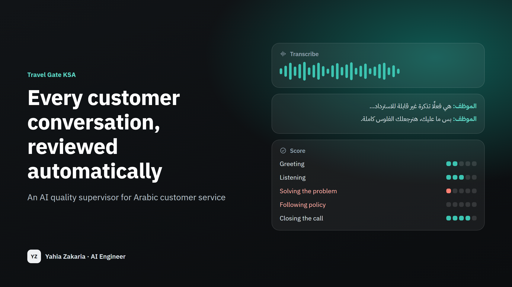
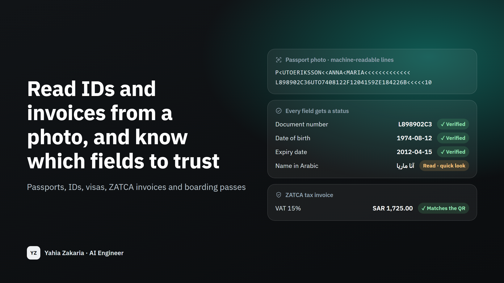
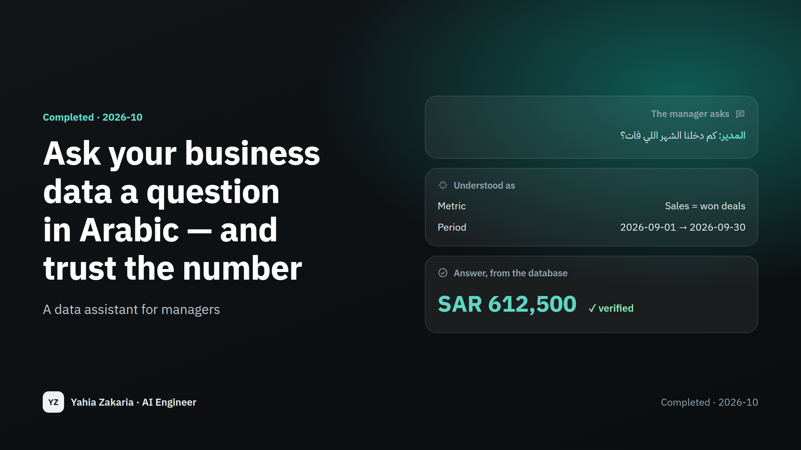

Call & conversation analytics
Every customer call, reviewed automatically
6 / 6sample calls scored, every score backed by a quote
Read the full storyOpen to freelance projects and full-time roles
Most companies already have the answers they need — buried in thousands of calls, chats and spreadsheets that nobody has time to go through. I build the systems that go through them: they transcribe, read, analyse and forecast, then hand a person a short, clear report they can act on the same day.
Real problems, measured results. Each one is written up for the people who would use it.

6 / 6sample calls scored, every score backed by a quote
Read the full story
0wrong answers sent to customers
Read the full story
100%of the fields it marks as verified are correct
Read the full story
97.6%of verified answers correct
Read the full storyEvery conversation transcribed and scored against your own checklist, with the evidence quoted.
See it in: Call quality review
An assistant that answers from your own data and documents, and asks or hands over to a person when it isn't sure.
Clean numbers, clear dashboards and demand forecasts your management can decide on.
See it in: Hotel cancellation analysis
A fair test of which model does your task best and what it will cost you each month.
See it in: Saudi support assistant
Yahia is a precise and dependable engineer. His analysis and dashboards gave our sales team clear numbers to base decisions on, and he always explained his results in plain terms. I recommend him with confidence.
Tell me what you're trying to fix or find out. I'll reply with a clear plan: the steps, the timeline, and what it would cost to run.